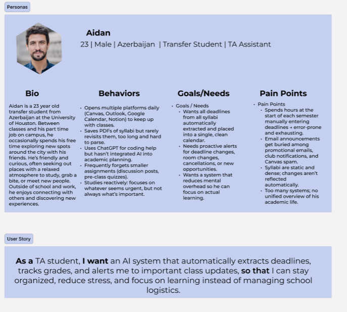
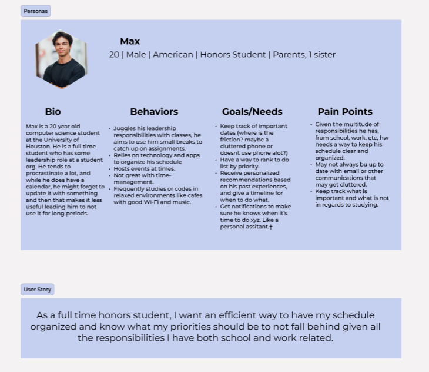
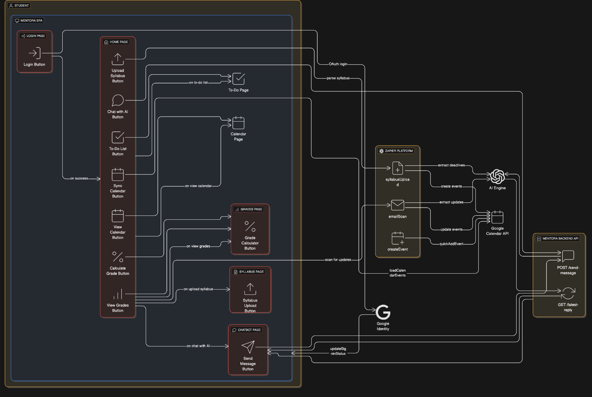
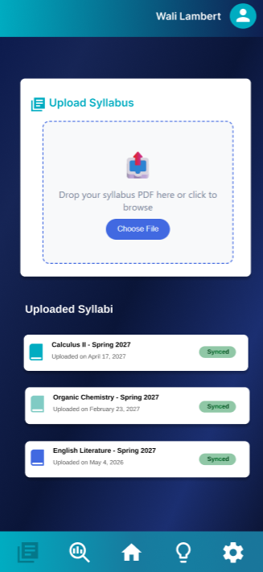
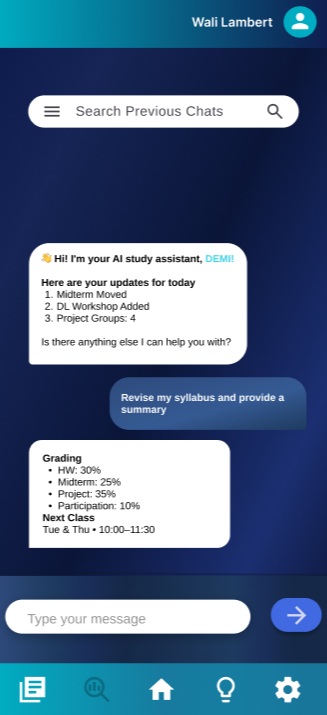
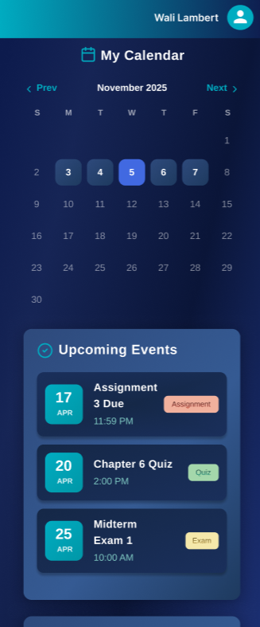
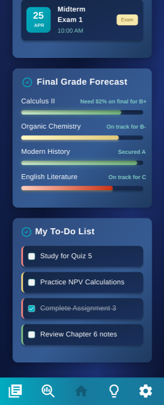
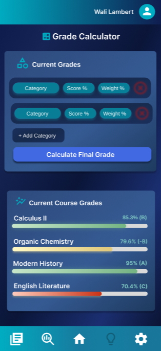
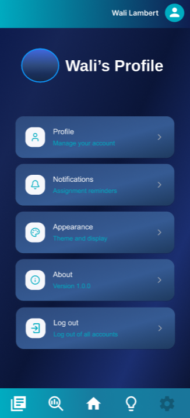

Mentora
Turning scattered syllabi, class policies, grade rules, and academic reminders into one semester operating system students can trust.
The Story
The issue was not motivation. It was translation.
Students were not asking for another productivity app. They were trying to decode long syllabi, email updates, grading policies, Canvas posts, group chats, and calendar reminders into a single question: what do I need to do next? Mentora, originally developed as DEMI, became a focused answer to that problem. I led the product roadmap by turning interview patterns into a 48-hour MVP: upload a syllabus, extract what matters, organize the semester, and let an AI assistant answer course-specific questions.
Before
Students manually copied deadlines and policies from dense documents into separate calendars, notes, and reminders.
Product Move
Scope the product around syllabus extraction, assignment tracking, calendar sync, grade visibility, and Demi as a course-aware assistant.
After
Students could move from static class documents to structured deadlines, tasks, grade forecasts, and study guidance.
How might we turn messy academic documents into a reliable semester plan without asking students to manually rebuild their schedule?
Problem
Academic planning breaks at the setup stage
A student can be organized and still fall behind if the source material is scattered. Syllabi contain grading weights, project dates, reading schedules, attendance rules, office hours, late policies, exam windows, and exceptions. But students still have to translate every detail into their own system. That setup burden is exactly where planning fatigue starts.
I framed the opportunity as a product system rather than a chatbot: first make the information structured, then make the assistant useful.
Too Many Sources
Syllabi, LMS updates, emails, and calendar reminders each held partial truth.
No Confidence Layer
Students were unsure whether deadlines were current, complete, or worth prioritizing.
Grades Felt Reactive
Students often knew their current grade too late, but not what future score would change the outcome.
SPEAKING TO USERS
I narrowed the roadmap by looking at where planning actually breaks
The personas below are intentionally large because they are the evidence behind the roadmap. They showed that students needed the same product promise from different angles: reduce manual setup, clarify priorities, and show the next best action.


OPPORTUNITIES
I guided the team to four feature areas for the MVP
With 48 hours, the temptation was to build everything: tutoring, study groups, flashcards, LMS integrations, grade analytics, and a general AI assistant. I pushed the team toward the smallest complete loop that would still feel meaningful. A student uploads a syllabus. Mentora extracts course structure. The system creates calendar and task views. Demi answers questions using course context.

Syllabus Upload
The highest-leverage input because it contains deadlines, weights, schedules, and policies.
Calendar + To-Do
The strongest output because students need visible next steps, not another static document.
Broad Tutoring
General tutoring sounded exciting but did not solve the first trust problem: knowing what the class requires.
DEFINING CORE FEATURES
Each screen answered a specific planning question
Instead of placing all prototype images together, I broke the flow into decision moments. The product needed to help students first import information, then ask questions, then see time, then understand performance.

1. Capture the source of truth
The upload screen reduces setup friction by making the syllabus the starting point. The design choice here was practical: do not ask users to create every assignment by hand before they can experience value.

2. Let students ask the messy questions
Demi gives students a way to ask, "What changed?" "What is due?" or "What should I focus on?" without searching through multiple class sources. The AI layer supports interpretation after the system has structured the source material.

3. Make time visible
The calendar page turns extracted data into a planning surface. This matters because students do not just need dates; they need dates in relation to everything else happening that week.

4. Connect grades to action
The forecast and to-do screens help students understand both what is coming and what it means. This was the product shift from "tracking tasks" to "helping students make better academic decisions."


VISUAL LANGUAGE
I separated calculation from forecasting because each screen needed one calm job
One important roadmap decision was to separate current grade calculation from final grade forecasting. A calculator answers, "Where am I right now?" A forecast answers, "What do I need next?" Combining those into one feature would have looked simpler, but it would have blurred two different student decisions.
Current Grade
Helps students understand performance based on completed work and grading weights.
Final Forecast
Shows what future scores or assignments could change the final outcome.
Clarity Over Compression
Kept tools separate so each screen had one job and one mental model.
LEARNINGS & IMPACT
The MVP proved students wanted academic clarity more than AI novelty
2nd Place
Recognized in the academic planning platform competition.
48 Hours
Shipped a focused MVP under hackathon constraints without losing the core workflow.
10+ Interviews
Roadmap decisions were based on repeated student pain points, not feature guessing.
40+ Users
Early adoption validated syllabus analysis, assignment tracking, and planning support.
Next
The next version would make the AI more transparent and the planning loop more connected
If I continued Mentora, I would focus on trust mechanics: source-linked extraction, editable events, confidence states, calendar export, LMS/email syncing, and weekly planning summaries. The most important next step is not more AI; it is making every AI output traceable to the original syllabus or announcement so students know when to trust it.
Reflection
Mentora taught me to scope AI around a workflow, not a wow factor
The strongest product decision was narrowing the product around a student's real operating pain: turning academic information into action. The result was a clearer story from beginning to end: students start overwhelmed by documents, move through structured extraction and planning, and end with a system that helps them feel more in control of the semester.